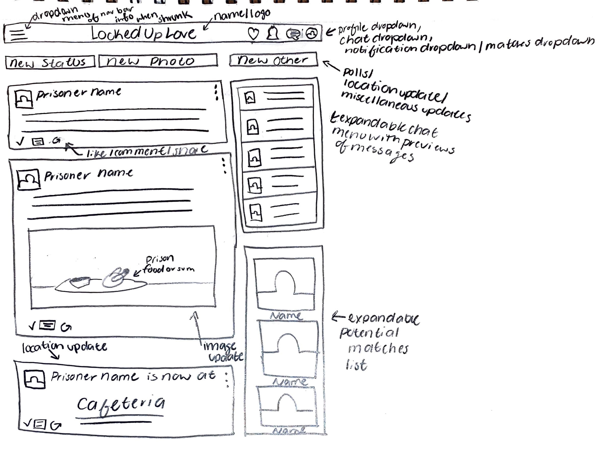

Lab 21: 2nd Draft Team Project Sketches
Challenge
The purpose of Lab 21 was to create three more detailed sketches of our client website from the 15 sketches that we created in the previous lab. We were to complete this assignment individually. After receiving feedback on our sketches from the last lab from our teammates, we were to choose three sketches from the three ideas that we wished to build upon and sketch them yet again but more thoroughly. My teammates thought the fact that I included a "Suggested Matches" section was a good idea for the website. Also, the idea that we should make the images enlarge when hovered over would be a nice challenge for us to tackle. Overall, the feedback that I received was helpful because in this lab, I thought more about the suggestion tabs and what else I could possibly add to the prototype to make it more personal/interactive. We were then to take pictures of/scan and upload them to our Lab 21 webpage. After doing so we are to test our files locally to see if everything works the way it should and then upload them to the server.
Problems
When completing Lab 21, I did not have any issues. I utilized the same CSS styling and Bootstrap 4 format to create the page. The more detailed sketches were also easy to create since I already had in mind what I had wanted to add on to the previous sketches and ultimately to the final website.
Results
The results of this lab are shown in the images below. Each section features a sketch of each possible facet of our client website. I chose to build upon one sketch for on the timeline, match profile page, and profile page of the user.
Timeline Sketch
Match Profile Sketch

Profile Sketch